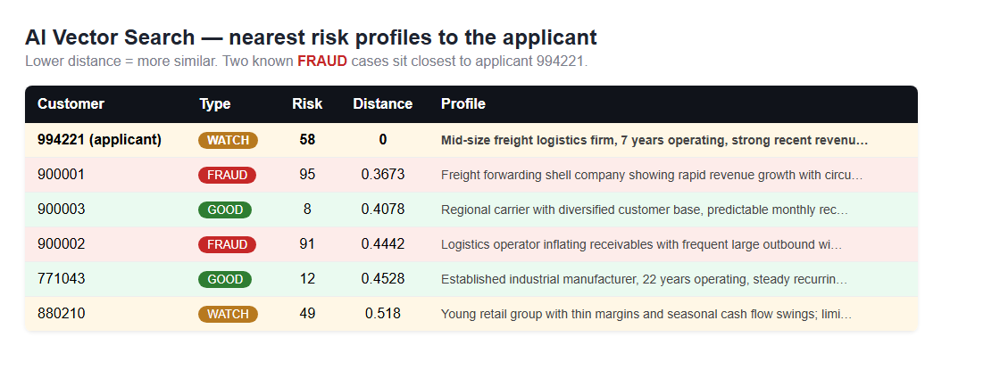
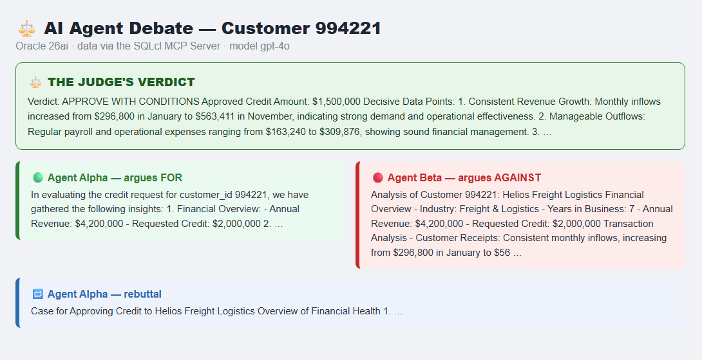

A hands-on look at the new SQLcl MCP Server, AI Vector Search, and a fun way to make AI more trustworthy — all running on Oracle AI Database 26ai.
Instead of asking one AI for an answer, I asked two AIs to argue — one in favour, one against — both pulling their evidence live from the same Oracle 26ai database, with a third AI acting as the judge.
It sounds playful, but there's a serious point underneath. A single AI tends to give you one confident answer and quietly skip the awkward facts. Two AIs that disagree on purpose drag those awkward facts into the open. And because every fact comes straight from the database, the whole debate is grounded in real data — not made-up "hallucinations".
As an Oracle ACE, I spend a lot of time with the Oracle AI Database. Two features in particular make this kind of project genuinely easy now:
Put those together and the database stops being a passive box you read from. It becomes a place where AI agents can safely investigate.
MCP stands for Model Context Protocol — think of it as a universal adapter that lets AI assistants (Claude, Cline, your own scripts) connect to tools. Oracle ships an MCP server right inside SQLcl 25.2 and later. You start it with a single command:
sql -mcpOnce it's running, it offers your AI a small, safe menu of actions:
| Tool | What it does |
|---|---|
list-connections | Show your saved database connections |
connect / disconnect | Open or close a connection |
run-sql | Run SQL or PL/SQL |
run-sqlcl | Run SQLcl commands |
schema-information | Describe the connected schema |
The key thing: the AI never sees your password. It just asks the MCP server to run things on a connection you've already saved. Every query it runs shows up in the database audit trail like any other session.
I gave each agent a personality and pointed all three at the same 26ai database:
Agent Alpha (for) Agent Beta (against)
\ /
\ /
SQLcl MCP Server -> Oracle 26ai
(run-sql, vector search)
|
v
The Judge -> final decisionNumbers alone don't catch everything. Sometimes a customer just feels like a previous bad actor. That "feeling" is exactly what AI Vector Search captures.
I stored a short written risk profile for each customer, plus historical fraud cases, as vectors in a single table:
CREATE TABLE risk_profiles (
customer_id NUMBER,
label VARCHAR2(20), -- GOOD | WATCH | FRAUD
risk_score NUMBER,
profile_text VARCHAR2(4000),
embedding VECTOR(1536, FLOAT32)
);Then finding the most similar past cases is just SQL — no special add-ons:
SELECT customer_id, label, risk_score,
ROUND(VECTOR_DISTANCE(embedding, :query, COSINE), 4) AS distance,
profile_text
FROM risk_profiles
ORDER BY VECTOR_DISTANCE(embedding, :query, COSINE)
FETCH APPROX FIRST 5 ROWS ONLY;The smaller the distance, the more alike two profiles are. So when Agent Beta runs this against a customer, it instantly sees whether that customer looks like a known fraudster.

I gave the agents a deliberately tricky applicant — a freight company with genuine 6%-a-month revenue growth but also a few suspicious, large, round-number wire transfers. Here's how the debate played out:
That verdict is exactly the kind of balanced, defensible decision you want — and crucially, every point in it traces back to real rows in the database.

If you try this yourself, here are the little things that tripped me up — so they won't trip you:
VECTOR_DISTANCE(column, query, COSINE) with FETCH APPROX FIRST n ROWS ONLY. (Ignore any online examples using @@ — that's PostgreSQL, not Oracle.)sql -mcp and a saved connection — there's no magic in-database "enable MCP" procedure to call.& as a substitution variable, so text like "Freight & Logistics" needs care when scripting inserts.We usually think of AI and the database as two separate worlds — the AI does the "thinking", the database just stores the data. Oracle 26ai blurs that line. With AI Vector Search and the SQLcl MCP Server, the database becomes a place where AI agents can safely reason over your real, operational data.
And making those agents argue? That turned out to be a surprisingly effective way to get a decision I could actually trust.
⚠️ This is a learning demo, not financial advice — don't make real lending decisions from a sample database.